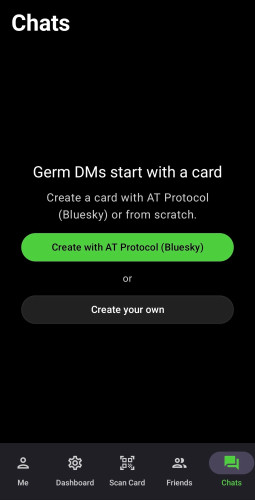
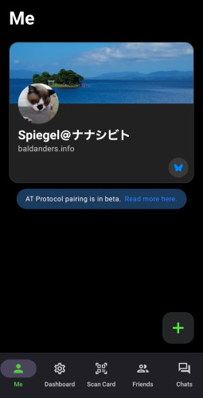
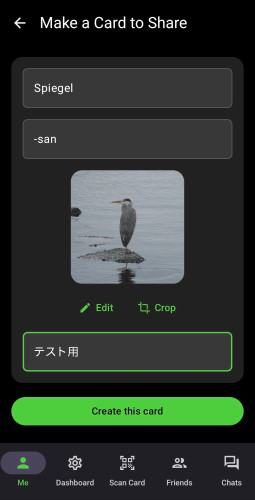
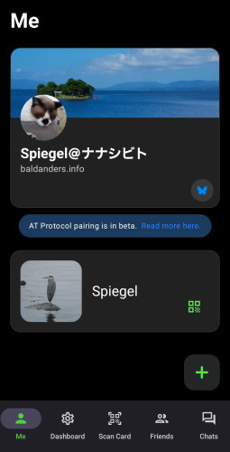
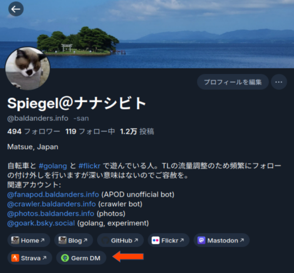

Bluesky アカウントと連携できる暗号化メッセージングアプリ Germ DM

今回は Bluesky の TL から。
Bluesky 公式アカウントから以下のポストが流れてきた。
Encrypted DMs from your Bluesky profile—now for Android and iOS! Our friends at Germ have built end-to-end encrypted messaging, including voice notes, on the same open protocol as Bluesky. Log in to Germ with your Bluesky account for fully private DMs. Try it: @germnetwork.com
— Bluesky (@bsky.app) 2026年11月19日 2:05
[image or embed]
Germ DM は Germ Network が提供する暗号化メッセージングアプリで，元々は iPhone 用のアプリだったのだが Android 版もリリースされたようだ。 通信は End-to-End で暗号化され，サインアップに Bluesky などの atproto アカウントを使用できるのが特徴だ。
ポストでは WIRED の記事を読め，とあるのだが，記事自体が paywall の向こう側にあって，私は読めないのよ1。 なので今回は Kagi Assistant や Kagi Translate に手伝ってもらいながら調べてみた。 ついでにインストールもやってみる。
Germ DM の暗号化通信
暗号化通信には IETF 標準の MLS (Message Layer Security) が用いられている。
- RFC 9420: The Messaging Layer Security (MLS) Protocol : 鍵交換，エポック，メンバー変更，セキュリティ特性などの詳細
- RFC 9750: The Messaging Layer Security (MLS) Architecture : MLS とメッセージングアプリ，認証サービス，配送サービスの関係を解説
RFC 9420 が2023年，RFC 9750 が2025年となってるので，割と最近の規格なんだな。 とりあえず Kagi Assistant に要約してもらった。
ざっくりした仕組み
MLSでは，グループの状態を「エポック」と呼ぶ単位で管理します。グループの鍵やメンバー構成が更新されるたびに，新しいエポックへ進みます。各エポックでメンバーが共有する秘密から，メッセージ暗号化用などの鍵が導出されます。
たとえば，グループに新しい人を加えるときは，その人の公開鍵情報を使って追加を提案し，既存メンバーが「Commit」を処理して新しいエポックへ移ります。新メンバーにはグループに参加するための情報を「Welcome」として渡します。メンバーの削除や鍵の更新も同様に，変更を提案し，Commitによって確定します。
グループの鍵情報は「ラチェットツリー」という木構造で管理されます。この構造により，メンバーが増減したときに，全員へ個別に鍵を配り直すより効率よく更新できます。RFCでは，ある一人を除いたメンバーへ更新情報を届ける処理を，グループ人数 $N$ に対して概ね $\log(N)$ 回の暗号化で行える例を説明しています。
何を守るための仕組みですか
- エンドツーエンドの機密性と完全性：グループのメンバーだけがメッセージ本文を読めるようにし，受信者は送信者の認証や改ざんの有無を確認できます。
- 前方秘匿性（Forward Secrecy）：後になって鍵が漏れても，適切に古い鍵が削除されていれば，過去のメッセージまで遡って読まれにくくする性質です。
- 侵害後安全性（Post-Compromise Security，PCS）：端末や鍵が一時的に侵害されても，その後に新しい鍵が生成・共有され，メンバーが更新を処理すれば，以後の通信を再び安全にできる性質です。単に鍵を更新する提案を送るだけでなく，更新を含むCommitが他のメンバーに処理されることが重要です。
これって鍵の信用モデルを含む，一種の PKI と考えていいのかな？ MLS については，そのうちもう少し詳しく調べてみよう。
Germ Network 側は，これによって iMessage や Signal と同等水準のセキュリティを実現したと主張しているらしい。 また E2EE なので通信内容については当人以外は誰もアクセスできないとも言っている。
End-to-end encryption means that your relationships and conversations on Germ are not available to anyone, whether us, Bluesky, Blacksky, or any other service provider. Unlike some other software, we do not know your phone number, e-mail address, location, IP address, when you open or close the app, what you click on, how fast you scroll, who you talk to, or when.
この辺は E2EE を都合よく解釈する Apple とは違うようだ（笑）
もちろん会話の内容はお互いのデバイスの中にのみ保存され，第三者は閲覧できない。
Germ DM is designed to help you control what information you produce and share—with other users, and with us, the developer. The information you produce is stored on your device, not with us. When you send information to other users, it is end-to-end encrypted: data is encrypted on your device and decrypted on the recipient’s device; we cannot read it as it travels through our servers, nor can we produce it for anyone else.
なお，調査してくれた Kagi Assistant は Germ DM が第三者の専門家によるセキュリティ監査を受けていないらしい点を指摘していた。 GnuPG や Signal などの暗号ツールが専門家に厳しいチェックを受け続けていることを考えると，MLS を採用しているからといって即安全というわけではない点には注意が必要である。 まぁ，なんだかよく分からないプロトコルで「うちの製品は暗号化してるので安全です」とか言われるよりはマシであるが。
Germ Card (または Burner Card)
Germ DM のサインアップは Bluesky を含む atproto 上のアカウントを使うことができるが，実際の運用では Germ Card を使って複数の IDentity を使い分けることができるらしい。
In Germ, your identities are the cards you create. You control who can reach you and how you present yourself to them, by exchanging cards. No one can contact you on Germ unless you’ve given them permission by exchanging a card with them. When you log in to Bluesky on Germ, you authenticate your atproto handle to one of your cards, but you still control how you are accessed.
Our unique system lets you manage multiple identities, and who can contact them, through one secure inbox. Other users who have one of your cards can’t find or see your other cards unless you actively share them.
つまり atproto アカウントでサインアップしたときに作成される Atproto Card とは別に，同時に最大3枚の Germ Card を作成できる。 Atproto Card は Bluesky 等のサービスで公開できるので，そこから相手のカードを取得する。 Germ Card に関しては友人などと直接的に交換する。 会話を始めるには相手のカードをタップすればよい。
会話を終了するにはアプリ上の会話を削除する。 削除した会話は残らない。 あるいは相手のカードを削除することでも会話を終了できる。 この場合，相手との会話を再開するにはカードを再取得する必要がある。 さらに会話を求める相手のカードをブロックすることもできる。
なお，自分の Atproto Card は基本的に削除できないっぽい（修復はできる）。 Germ Card は必要に応じて削除できるので，文字通り使い捨てカード（burner card）として使うことができる。 Atproto Card と Germ Card を使い分ける運用には工夫が要りそうだ。
なお，今のところ Germ DM はグループチャットには対応していない。 ボイスノートには対応したらしい。
Germ DM をインストールしてみる
Android 版および iOS 版は普通にストアからインストールできる。
以下が Android 版をインストールした直後の起動画面。

Germ DM (1)
同意するとサインアップ画面に移動する。


Germ DM (2)
ここで [Create with AT Protocol (Bluesky)] ボタンをタップして Bluesky のアカウントでサインアップする。
認証は OAuth で行われた。
サインアップに成功すると以下の画面になった。


Germ DM (3)
まだ Atproto Card しかない状態。
右下の [+] ボタンを押すと Germ Card を作成する画面に移動する。


Germ DM (4)
[Create this Card] ボタンを押して完了する。


Germ DM (5)
とりあえず，今回はここまで。 だって相手おらんし（笑）
ちなみに Bluesky のプロファイル画面には以下のように

Bluesky Profile
[Germ DM] リンクボタンが生えているので，ここからアプリを起動して Atproto Card を取得できる。
お試し相手がいない方は（spam 以外は）お気軽にどうぞ。
ブックマーク
- Messaging Layer Security - Wikipedia
- RFC 9420 - The Messaging Layer Security (MLS) Protocol 日本語訳
- RFC 9750 - The Messaging Layer Security (MLS) Architecture 日本語訳
- Germ is Now Quantum Secure — Germ Network
- A startup called Germ becomes the first private messenger that launches directly from Bluesky’s app | TechCrunch
-
WIRED の購読料は 2 USD/月 くらいなので，払えるっちゃあ払えるのだが，今はサブスクリプション契約を絞ってる最中なので，購読料を払いたくない。 ↩︎